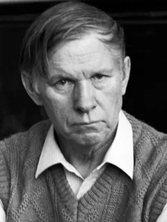
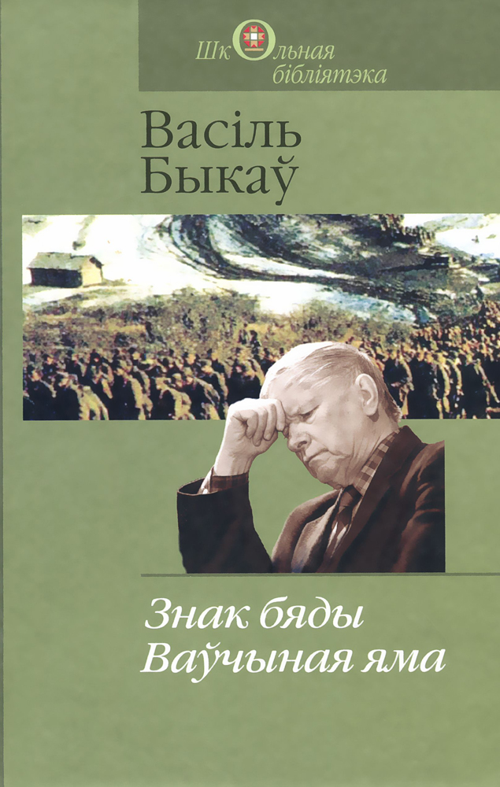

Васіль Быкаў

Быкаў на фронце

Народны пісьменнік
Знак Бяды

Васіль Быкаў пайшоў на фронт добраахвотнікам у 1942 годзе, калі яму было ўсяго 18 гадоў. Ён прайшоў вайну ў складзе пяхоты і быў двойчы паранены. Гэтыя ўласныя перажыванні ляглі ў аснову ўсіх яго твораў.
Творы Быкава часта падвяргаліся жорсткай крытыцы і цэнзуры з боку савецкай улады. Яго абвінавачвалі ў «паклёпе на савецкі народ» і «дэгераізацыі» вайны, бо ён паказваў яе занадта жорсткай і праўдзівай, без ідэалагічных прыкрас.
Пасля вайны Быкаў скончыў Віцебскае мастацкае вучылішча, а затым і факультэт журналістыкі Беларускага дзяржаўнага ўніверсітэта. Ён мог стаць мастаком, але выбраў літаратуру.
Галоўная тэма творчасці Быкава — гэта маральны выбар чалавека ў экстрэмальных умовах. Ён заўсёды ставіў пытанне: як застацца чалавекам, калі вакол смерць і здрада? Яго героі часта паміраюць, але не здраджваюць сваім прынцыпам.
У 1980 годзе Васілю Быкаву было прысвоена званне Народнага пісьменніка Беларусі. Ён таксама быў узнагароджаны Дзяржаўнай прэміяй СССР і стаў лаўрэатам шматлікіх міжнародных прэмій.

Раман «Знак бяды» быў упершыню апублікаваны ў 1982 годзе ў часопісе «Полымя». Гэта адна з самых вядомых і значных кніг аўтара пра Вялікую Айчынную вайну.
Назва твора сімвалічная. «Знак бяды» — гэта не проста папярэджанне, а непазбежнасць трагедыі. Крыж на магіле, разбураная хата, страчаная зямля — усё гэта знакі бяды, якая прыйшла на беларускую зямлю разам з вайной.
Дзеянне адбываецца ў Заходняй Беларусі падчас фашисцкай акупацыі. Вёска, дзе жывуць галоўныя героі, аказваецца паміж двух агнёў: з аднаго боку — партызаны, з другога — паліцаі і немцы.
Галоўны канфлікт твора — гэта не проста барацьба з ворагам, а сутыкненне чалавечай годнасці і сляпой жорсткасці. Пятро Ганчар супрацьстаіць не толькі паліцаю Косцю, але і камісару Сысоеву, які патрабуе ад яго здаць зброю, не разумеючы яго становішча.
Фінал твора вельмі трагічны: галоўныя героі гінуць, а іх хата згарае. Быкаў паказвае, што вайна не пакідае нічога святога, але нават у смерці героі застаюцца людзьмі. Гэта адметная рыса ўсёй творчасці пісьменніка.
У 1986 годзе па рамане быў зняты двухсерыйны мастацкі фільм «Знак бяды» (рэжысёр Міхаіл Пташук). Галоўныя ролі выканалі вядомыя акцёры, а сам Быкаў станоўча адазваўся пра гэтую экранізацыю.